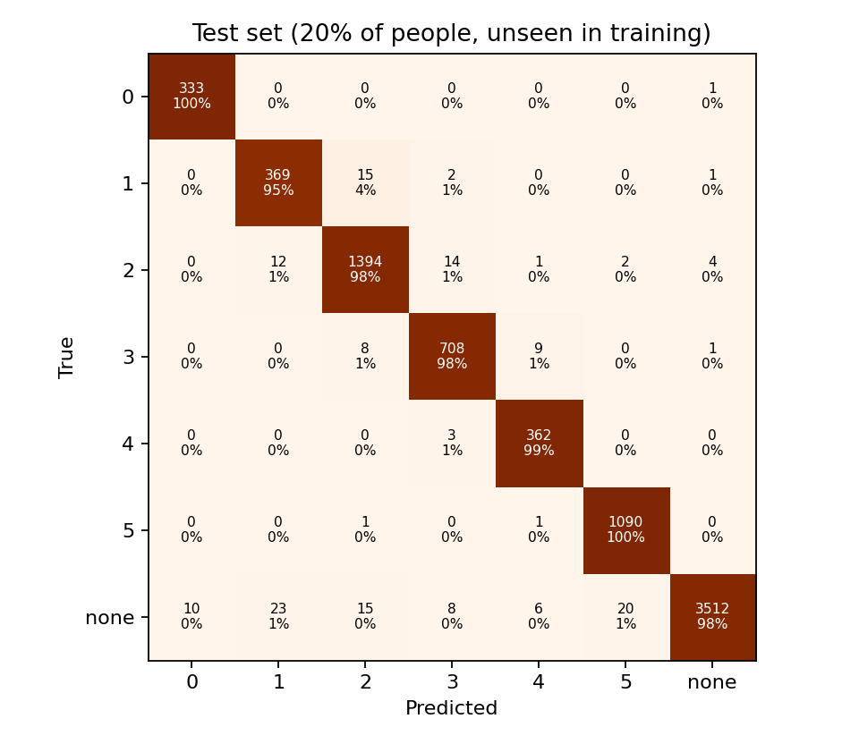
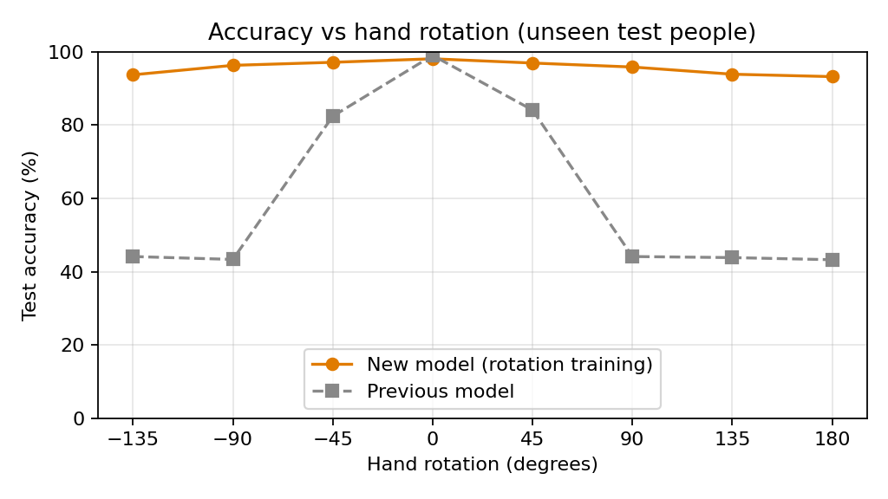

Gesture synthesizer · OpenCV.js + a CNN trained on 44k hand images
cv.inRange keeps pixels whose Cr and Cb fall in the skin range.cv.findContours; the biggest blob in the box is the hand.cv.dnn. It outputs 0–5 fingers or "none" (faces, objects, other gestures).The classical method (convexity defects: deep, narrow valleys in the convex hull are gaps between fingers) is still available in the panel for comparison.
Dataset: HaGRID (HAnd Gesture Recognition Image Dataset), 31,833-image sample at 384p (cj-mills/hagrid-sample-30k-384p, CC-BY-SA 4.0). Real photos from thousands of people in their own homes, lighting and backgrounds.
Labels: fist → 0, one → 1, peace / two-up → 2, three → 3, four → 4, palm / stop → 5. Other gestures, relaxed hands and random background patches → none.
Split: 80/20 by person: nobody in the 7,933 test crops appears in the 36,165 training crops, so the score reflects new users.
Training: MobileNetV3-Small, ImageNet-pretrained. Every training image is rotated by a random angle (up to a full turn), slightly perspective-warped, zoomed, flipped and colour-shifted. Because the rotation is known, the network also learns to output the hand’s tilt. Exported to ONNX and run in the browser by OpenCV.js.
Two outputs, one network: 7 class scores (0–5 fingers, none) plus sin and cos of the tilt angle. Loss = cross-entropy + squared error on (sin, cos).


Inspired by Gesture Synth by Eric Wei. Built with OpenCV.js and Tone.js.